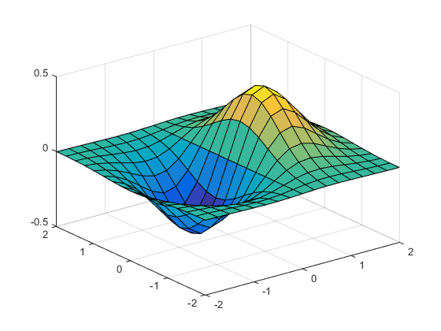
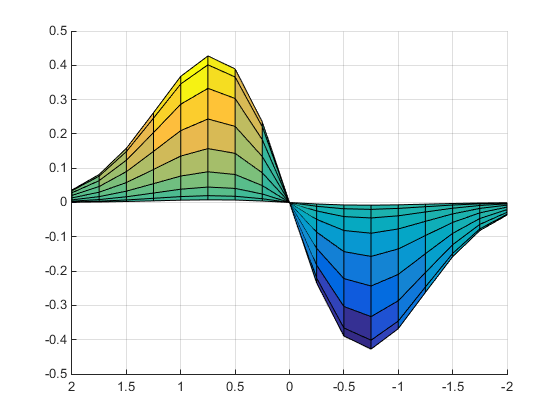
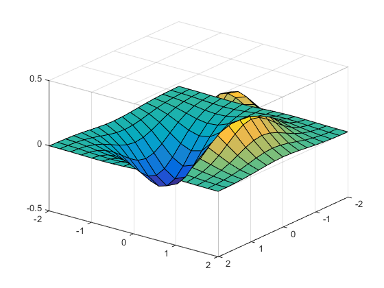

Setting the Viewpoint with Azimuth and Elevation
Azimuth and Elevation
You can control the orientation of the graphics displayed in an axes using
MATLAB® graphics functions. You can specify the viewpoint, view target,
orientation, and extent of the view displayed in a figure window. These viewing
characteristics are controlled by a set of graphics properties. You can specify
values for these properties directly or you can use the view
command and rely on MATLAB automatic property selection to define a reasonable view.
The view command specifies the
viewpoint by defining azimuth and elevation with respect to the axis origin. Azimuth
is a polar angle in the x-y plane, with positive angles
indicating counterclockwise rotation of the viewpoint. Elevation is the angle above
(positive angle) or below (negative angle) the x-y
plane.
This diagram illustrates the coordinate system. The arrows indicate positive directions.

Default 2-D and 3-D Views
MATLAB automatically selects a viewpoint that is determined by whether the plot is 2-D or 3-D:
Examples of Views Specified with Azimuth and Elevation
For example, these statements create a 3-D surface plot and display it in the default 3-D view.
[X,Y] = meshgrid([-2:.25:2]); Z = X.*exp(-X.^2 -Y.^2); surf(X,Y,Z)

The statement
view([180 0])
sets the viewpoint so you are looking in the negative y-direction with your eye at the z = 0 elevation.

You can move the viewpoint to a location below the axis origin using a negative elevation.
view([-37.5 -30])

Limitations of Azimuth and Elevation
Specifying the viewpoint in terms of azimuth and elevation is conceptually simple, but it has limitations. It does not allow you to specify the actual position of the viewpoint, just its direction, and the z-axis is always pointing up. It does not allow you to zoom in and out on the scene or perform arbitrary rotations and translations.
MATLAB camera graphics provides greater control than the simple adjustments allowed with azimuth and elevation.